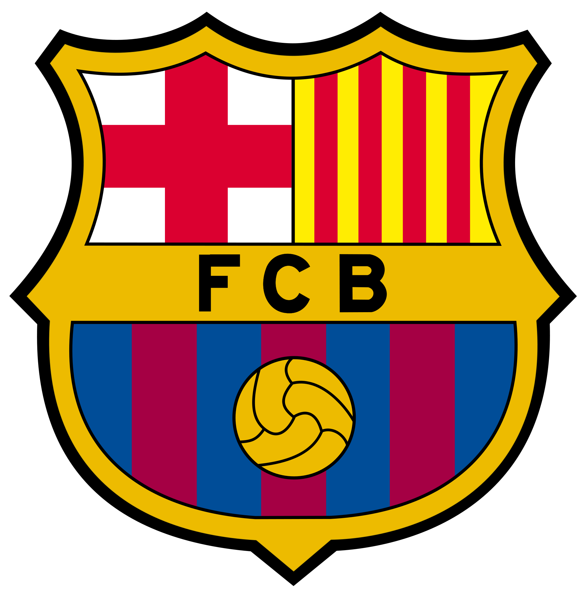

Go back to the main page
Football Clubs
F.C.Barcelona

Founded in 1899 by a group of Swiss, English and Catalan footballers led by Joan Gamper, the club has become a symbol of Catalan culture and Catalanism, hence the motto "Més que un club" (English: "More than a club"). Unlike many other football clubs, the supporters own and operate Barcelona. It is the second most valuable sports team in the world, worth $3.56 billion, and the world's second richest football club in terms of revenue, with an annual turnover of €560.8 million.[2][3] The official Barcelona anthem is the "Cant del Barça", written by Jaume Picas and Josep Maria Espinàs.[4]
Arsenal F.C

Arsenal Football Club is a professional football club based in Highbury, London, England, that plays in the Premier League, the top flight of English football. The club has won 13 League titles, a record 13 FA Cups, two League Cups, the League Centenary Trophy, 15 FA Community Shields, one UEFA Cup Winners' Cup and one Inter-Cities Fairs Cup. It has won the second-most top flight matches in English football history,[3] and is the only English club to go a 38-match league season unbeaten.
Juventus F.C

Juventus Football Club S.p.A. (from Latin iuventūs, "youth"; Italian pronunciation: [juˈvɛntus]), colloquially known as Juve (pronounced [ˈjuːve]),[5] is a professional Italian football club in Turin, Piedmont. Founded in 1897 by some Torinese students, the club has worn a black and white striped home kit since 1903 and has played home matches in different grounds around its city, the latest being the 41,507-capacity Allianz Stadium.